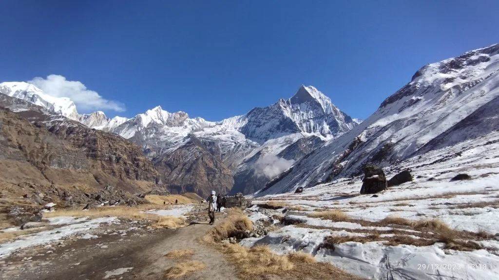
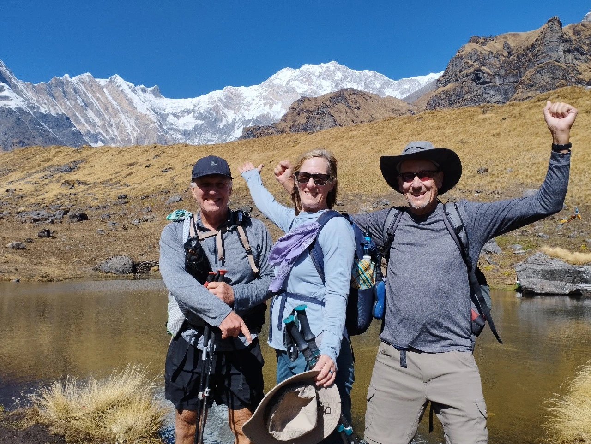
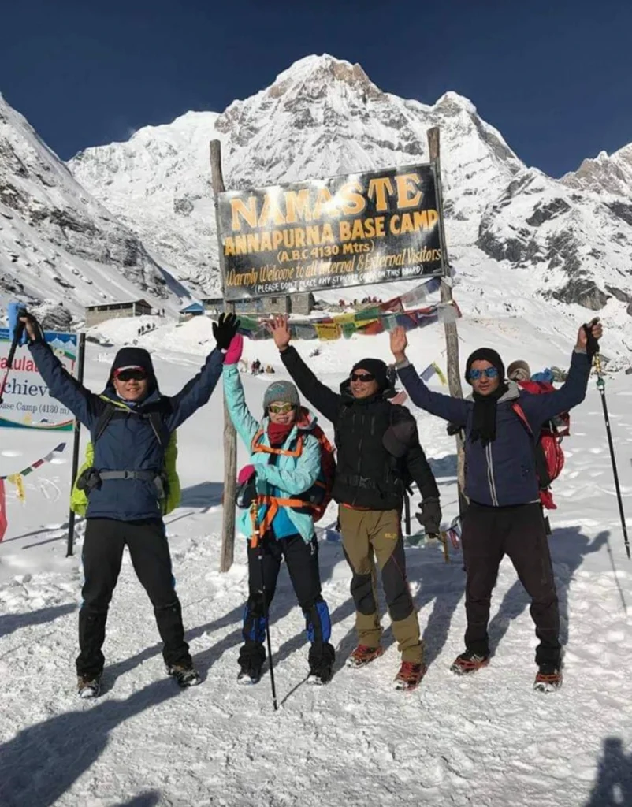

1. Annapurna Base Camp Trek Difficulty Rating: Moderate to Challenging (Grade 3.5 / 5)
The Annapurna Base Camp trek is an achievable alpine adventure for most motivated hikers with reasonable physical fitness. Unlike technical mountaineering peaks, the trek requires zero ropes, crampons, ice axes, or prior climbing experience.
However, underestimating the trail is a common mistake made by first-time trekkers who read that ABC is "easier than Everest Base Camp." While the maximum altitude is lower, the physical biomechanics of ABC are distinctly more strenuous on the muscular and skeletal system.

Primary Physical Challenges:
- Steep Stone Staircases: Thousands of uneven stone steps that place severe eccentric shock loads on knee cartilage and quadriceps.
- Relentless Undulation: You frequently descend 300 to 500 vertical meters into river ravines only to immediately regain that altitude on the opposite cliff.
- Rapid Biome Transitions: Hiking through hot, humid subtropical valleys (25°C+) at the start, transitioning to sub-zero alpine conditions (-10°C) at the sanctuary rim.
- Avalanche Chutes: The narrow corridor between Deurali and Machapuchare Base Camp traverses several active spring avalanche paths.
2. Altitude Profile: Understanding Oxygen Levels from Lowland Jungles (1,000 m) to ABC (4,130 m)
Altitude on the Annapurna Base Camp trek is progressive and manageable compared to the Everest region, but it still demands careful respect. At 4,130 meters (13,550 ft), the atmospheric pressure delivers approximately 61% of sea-level effective oxygen.
| Location | Altitude (m / ft) | Effective Oxygen vs Sea Level | Physiological Sensation |
|---|---|---|---|
| Pokhara (Lakeside) | 820 m / 2,690 ft | 92% | Normal sea-level respiration. |
| Siwai Trailhead | 1,400 m / 4,593 ft | 86% | Warm subtropical humidity; normal breathing. |
| Chhomrong | 2,170 m / 7,119 ft | 77% | Noticeable breathing increase on steep stairs. |
| Dovan | 2,600 m / 8,530 ft | 74% | Comfortable sleeping; cool forest air. |
| Deurali | 3,200 m / 10,498 ft | 69% | Mild morning headaches possible; slower pace needed. |
| Machapuchare Base Camp (MBC) | 3,700 m / 12,139 ft | 65% | Shortness of breath on mild inclines; cooler nights. |
| Annapurna Base Camp (ABC) | 4,130 m / 13,550 ft | 61% | Noticeable fatigue; slow cadence required; sub-zero freeze. |
Because you only sleep one or two nights above 3,500 meters, your body spends most of the trek in oxygen-rich lower zones, allowing excellent nightly recovery.
3. The Staircase Crucible: Navigating Chhomrong's 2,140 Steps & Ulleri's 3,300 Steps
The true signature difficulty of the Annapurna region is stone steps. Hundreds of years of terraced farming and porter trails have created massive stone staircases carved directly into mountainsides.
Two sections are legendary among Himalayan hikers:
- The Ulleri Staircase (On 10- to 13-Day Itineraries): Over 3,300 steep stone steps ascending straight up from Tikhedhunga (1,540 m) to Ulleri (2,070 m). Gaining 530 vertical meters over just 2.2 kilometers, it provides an intense cardiovascular workout.
- The Chhomrong Gauntlet (On All ABC Itineraries): A punishing descent of 2,140 stone steps from the top of Chhomrong down to the Chhomrong Khola suspension bridge at 1,900 m, followed immediately by an 1,800-step climb up to Sinuwa (2,340 m). You must repeat this entire sequence in reverse on your return descent!

4. Trail Mileage vs Walking Hours: Why 10 Kilometers Takes 6 Hours in the Annapurna Sanctuary
Many hikers look at daily trail distances on map printouts—often just 8 to 12 kilometers (5 to 7.5 miles)—and assume days will be short and effortless. In the Annapurna Sanctuary, horizontal distance is completely deceptive.
Because every kilometer involves either steep stone climbs or knee-jarring descents, your average hiking speed will drop to 1.5 to 2.2 kilometers per hour. Below is a realistic breakdown of daily physical strain:
| Trail Segment | Distance | Avg. Duration | Elevation Gain / Loss | Physical Strain Level |
|---|---|---|---|---|
| Siwai to Chhomrong | 9.5 km | 4.5 – 5.5 hrs | +770 m / -100 m | Moderate |
| Chhomrong to Dovan | 10.8 km | 5.5 – 6.5 hrs | +700 m / -270 m | Strenuous (Chhomrong stairs) |
| Dovan to Deurali | 7.8 km | 4.5 – 5.0 hrs | +600 m / -50 m | Moderate to Demanding |
| Deurali to ABC (via MBC) | 8.5 km | 5.0 – 6.0 hrs | +930 m | Demanding (High altitude) |
| ABC to Bamboo (Descent) | 15.2 km | 6.0 – 7.0 hrs | -1,820 m | Strenuous on Knees |
| Bamboo to Jhinu Danda | 9.2 km | 4.5 – 5.5 hrs | +450 m / -980 m | Moderate (Uphill to Chhomrong) |
5. Weather Extremes: Subtropical Jungle Humidity to -10°C Frost at Sanctuary Rim
Thermoregulation on the Annapurna Base Camp trek is a major physical demand. In the lower valleys around Siwai, Jhinu, and Chhomrong, daytime temperatures regularly hit 24°C to 28°C with high tropical humidity. Trekkers sweat heavily while climbing stairs under the midday sun.
As you pass through the cloud forests into Deurali and Annapurna Base Camp, temperatures drop precipitously. Inside the high sanctuary at 4,130 meters, nighttime temperatures regularly plunge to between -5°C and -12°C in autumn and spring, and below -18°C in winter. Managing rapid temperature shifts by peeling and adding technical clothing layers is vital to preventing hypothermia.

6. Avalanche Risk & Natural Hazards: Crossing the Deurali–MBC Avalanche Chutes Safely
The section of trail between Deurali (3,200 m) and Machapuchare Base Camp (3,700 m) passes through a narrow canyon bottleneck flanked by the vertical avalanche-prone slopes of Hiunchuli and Machapuchare.
During late winter and early spring (February to April), warming daytime temperatures can trigger wet-snow avalanches that sweep down these gullies across the Modi Khola river. In January 2020, a major avalanche in this exact corridor struck several trekkers.
Always cross the Deurali–MBC section early in the morning (between 7:00 AM and 10:00 AM) before the midday sun warms the high snowpack. Trek single-file, maintain 20-meter spacing between hikers, do not wear audio headphones, and strictly follow the route adjustments recommended by your licensed Sherpa guide.
7. Acute Mountain Sickness (AMS) on ABC: Symptoms, Hydration & Emergency Descent
Because the maximum altitude of Annapurna Base Camp is 4,130 meters, the risk of life-threatening High Altitude Pulmonary Edema (HAPE) or High Altitude Cerebral Edema (HACE) is statistically low—less than 1% among properly paced groups. However, mild to moderate Acute Mountain Sickness (AMS) can still occur if you ascend too fast.
Our Proven Altitude Management Rules:
- Never ascend with a headache: If you feel throbbing temples at Deurali (3,200 m), rest an extra night before continuing to ABC.
- Drink 4 Liters Daily: Hydration is your primary defense against hypoxia. Drink electrolyte water and hot ginger lemon tea at every meal.
- Descent is the Cure: If symptoms worsen at ABC, descending just 900 vertical meters to Deurali or Dovan provides immediate, life-saving relief.
8. Head-to-Head Comparison: Annapurna Base Camp vs Everest Base Camp vs Annapurna Circuit
How does the difficulty of Annapurna Base Camp compare to Nepal’s other world-famous trekking routes? Here is a direct side-by-side comparison:
| Physical Metric | Annapurna Base Camp (ABC) | Classic Everest Base Camp (EBC) | Annapurna Circuit (ACT) |
|---|---|---|---|
| Overall Difficulty Grade | Moderate to Challenging (3.5/5) | Strenuous (4/5) | Strenuous to Demanding (4.5/5) |
| Maximum Elevation | 4,130 m (ABC) | 5,545 m (Kala Patthar) | 5,416 m (Thorong La Pass) |
| Max Sleeping Altitude | 4,130 m (ABC) | 5,164 m (Gorak Shep) | 4,925 m (Thorong Phedi / High Camp) |
| Total Trail Distance | 68 – 72 km round-trip | 130 km round-trip | 140 – 160 km circuit |
| Steep Stone Steps | Extreme (Thousands of steps) | Low (Mostly dirt/rock trails) | Moderate (Steps mostly in lower valleys) |
| Altitude Sickness Risk | Low to Moderate | High (Multi-day hypoxia) | High (Rapid pass ascent) |
| Flight Risk / Cancellation | Zero (Accessible by road) | High (Lukla weather delays) | Zero (Road accessible) |
9. Terrain Technicality: Stone Staircases, Wet Wooden Bridges & Glacial Scree
The underfoot terrain on the ABC trail shifts dramatically across different elevation sectors:

- Granite Paving & Stairs (45% of trail): Wide stone trails through villages like Ghandruk, Chhomrong, and Ulleri. When wet, polished granite can be extremely slippery.
- Forest Dirt & Tree Roots (30% of trail): Between Sinuwa, Bamboo, and Dovan, the path winds through bamboo cloud forests with exposed, slick tree roots.
- River Boulder Beds (15% of trail): Narrow trails alongside the Modi Khola, featuring loose river stones and seasonal cantilever wooden bridges.
- Glacial Moraine & Scree (10% of trail): The final section above MBC to ABC involves loose gravel and rocky moraine shelves beside the South Annapurna Glacier.
10. Mental Stamina: Managing Stair Fatigue, Shared Dormitories & Basic Sanctuary Lodges
The psychological challenge of ABC is largely centered around stair repetition and high-altitude accommodation modesty:
- Stair Monotony: Climbing 2,000 steps requires mental focus. Trekkers who look up at the endless staircase often feel demoralized; the secret is looking only 3 steps ahead and maintaining a rhythmic cadence.
- Shared Dormitories at ABC: Because only 5 lodges exist at Annapurna Base Camp, rooms during peak season are communal dorms with 4 to 6 beds. Bringing earplugs and an eye mask ensures uninterrupted sleep.
- Squat Toilets: Above Bamboo, western-style toilets are replaced by ceramic squat toilets. Maintaining personal hygiene with wet wipes and hand sanitizer is essential.
11. 8-Week Physical Conditioning Plan: Quadriceps Endurance, Stairs & Knee Stability
To prepare your legs for the thousands of stone staircases, follow this structured 8-week physical training regimen:
| Training Phase | Cardiovascular Focus | Strength & Resistance Focus | Weekend Simulation Hike |
|---|---|---|---|
| Weeks 1 – 2: Base | 3x weekly 30-min jogging or cycling (Zone 2) | Bodyweight squats (3x20), lunges (3x15/leg), calf raises | 5 km walk on rolling terrain with light pack |
| Weeks 3 – 5: Strength | 3x weekly 40-min Stairmaster or 12% incline treadmill | Goblet squats, step-downs from box, wall sits (3x60s) | 8–10 km hill hike with 5 kg daypack (500 m gain) |
| Weeks 6 – 7: Peak | 2x 45-min Stairmaster + 1x HIIT intervals | Weighted step-ups, Bulgarian split squats, core planks | 12–14 km steep stair hike with 7 kg daypack (800 m gain) |
| Week 8: Taper | Light 20-min easy jogs, foam rolling, stretching | Mobility stretching, joint warmups | Rest, hydration, and packing preparation |
12. Crucial Equipment for Joint Protection: Dual Trekking Poles, Knee Straps & Sturdy Boots
The right gear directly transforms the difficulty of the ABC trek from agonizing to manageable:

- Dual Adjustable Trekking Poles: Absolute mandatory equipment for ABC. On descents (especially Chhomrong and Ulleri), poles absorb up to 25% of compressive force on your knees.
- Mid-Cut Waterproof Hiking Boots: Choose boots with ankle support, a stiff shank, and deep Vibram lugs to prevent ankle rolls on wet stone steps.
- Knee Braces / Patellar Straps: If you have a history of chondromalacia or patellar tendonitis, elastic knee braces or Cho-Pat patellar straps provide vital mechanical stabilization.
- Quality Merino Wool Socks: Medium-cushion wool socks prevent hot spots and blisters caused by repetitive braking forces on descents.
13. Emergency Logistics: First Aid, Diamox Protocols & Helicopter Evacuation from ABC
Safety infrastructure along the Annapurna Base Camp corridor is robust and highly organized:
- Guide Medical Monitoring: Our licensed guides carry medical pulse oximeters to check your blood oxygen saturation (SpO2) and heart rate twice daily.
- First Aid Medications: Guides carry Diamox (Acetazolamide) to aid acclimatization, Ibuprofen for joint pain and altitude headaches, rehydration salts, and comprehensive blister dressings.
- Emergency Helicopter Evacuation: In the rare event of severe altitude sickness, acute trauma, or sudden illness, emergency helicopter rescue can be dispatched directly to the helipads at ABC, MBC, Deurali, or Chhomrong, landing in Pokhara or Kathmandu within 45 to 60 minutes during daylight hours.
14. Frequently Asked Questions: Annapurna Base Camp Trek Difficulty
Get immediate, expert answers to the most common questions regarding physical fitness, trail safety, and difficulty for the Annapurna Base Camp trek.

Ready to Experience the Himalayas?
Whether you are preparing for high-altitude trekking, cultural circuits, or alpine summit expeditions, start planning a bespoke journey tailored to your fitness, travel season, and style.